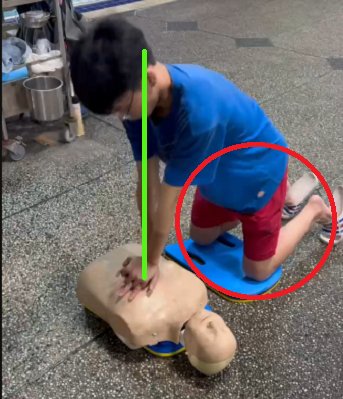

CPR按壓姿勢標準判斷
1.按壓次數
將一只手的掌根放在患者胸骨下半部分，另一只手的掌根重疊在第一只手上，雙手手指交叉或平行保持抬起，不接觸患者胸部。
2.按壓深度
成人和青少年的按壓深度應為胸廓厚度的至少 5 公分(2 英吋)，但不超過 6 公分(2.4 英吋)。
兒童(1 歲至青春期前)的按壓深度應為 5 公分(2 英吋)。
嬰兒(不到 1 歲)的按壓深度應為 4 公分(1.5 英吋)。
3.按壓頻率
頻率應為 100 至 120 次每分鐘。這是一個關鍵點，太快或太慢都可能影響效果。
4.身體姿勢
按壓時，救援者的肩膀應與患者的胸部垂直，雙手肘關節保持伸直，利用上半身的重量進行按壓。
確保按壓後胸部完全回彈，但不要讓手離開胸部，保持穩定的節奏。
5.按壓質量
避免過度放鬆或斷續按壓，保持連續和穩定的按壓。
每次按壓結束後，應允許胸部完全回彈，不得施加壓力。

正確姿勢1
雙手肘關節保持伸直，利用上半身的重量進行按壓。
將一只手的掌根放在患者胸骨下半部分。
另一只手的掌根重疊在第一只手上。
雙手手指交叉或平行保持抬起，不接觸患者胸部。
正確姿勢2
按壓深度足夠。
按壓時，救援者的肩膀應與患者的胸部垂直。
雙手肘關節保持伸直。
利用上半身的重量進行按壓。